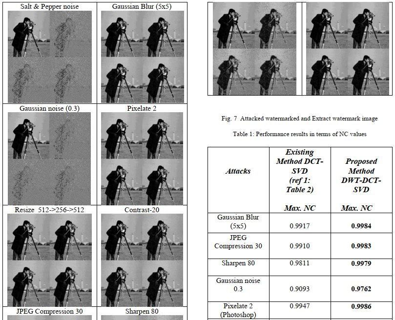

Md Maklachur Rahman
PhD Student in Computer Science and Engineering
 Scholar
ScholarI am a PhD student in Computer Science and Engineering at Texas A&M University. My research focuses on medical image segmentation, computer vision, vision-language modeling, and efficient deep learning. I work on robust and practical learning frameworks for real-world applications, with a strong interest in healthcare-oriented problems. My broader background includes visual tracking, multimodal learning, and deep neural network design.
I am also active in academic service and mentoring. I review for major conferences and journals, and I maintain open-source research repositories to support reproducibility and broader community use.
Recent News
Education
Texas A&M University
PhD in Computer Science and Engineering
Jan 2022 – Present
Kyungpook National University
MS in Computer Science and Engineering
Sep 2018 – Aug 2020
Chittagong University of Engineering & Technology
BS in Computer Science and Engineering
Bangladesh
Experience
Graduate Research Assistant, Texas A&M University
Jan 2022 – Present
Researcher / Research Assistant, Kyungpook National University
Aug 2018 – Dec 2021
Software Engineer, Samsung R&D Institute Bangladesh
Oct 2013 – Jul 2016
Selected Publications
I recommend keeping this section selective. For a research job-market homepage, 4–6 highlighted papers are usually stronger than a long full list. You can keep the full publication record on Google Scholar and in your CV.

MambaLiteUNet: Cross-Gated Adaptive Feature Fusion for Robust Skin Lesion Segmentation
This paper presents an efficient segmentation framework for skin lesion analysis, designed to balance robustness and lightweight computation. Replace the placeholder image with your actual teaser figure when ready.

AULUNet: An Adaptive Ultra-Lightweight UNet Framework for Efficient Skin Lesion Segmentation in Resource-Constrained Environments
A lightweight segmentation model tailored for strong efficiency–accuracy trade-offs in resource-constrained settings. Replace the placeholder image with your actual teaser figure when ready.

Learning Random Noise Salient Feature Fusion Siamese Network for Low-Resolution Object Tracking
Student Abstract and Poster Program, AAAI 2024.


DCT/DWT/SVD-based Image Watermarking and Image Authentication
This is reasonable to keep only if you want to show research breadth or your long-term background. For a research scientist homepage, I would keep it lower on the page rather than near the top.
Honors and Awards
- BMVC Outstanding Reviewer
- AAAI Travel Award
- Texas A&M CS Department Travel Award
- Outstanding MS Thesis Award, Kyungpook National University
Academic Service
- Reviewer: CVPR, ECCV, BMVC, AAAI
- Reviewer: IEEE Transactions on Multimedia, The Visual Computer, and other journals
- Mentoring undergraduate and junior research students
Selected Open-Source Projects
- MambaLiteUNet — codebase for lightweight and robust skin lesion segmentation.
- AULUNet — adaptive ultra-lightweight UNet for efficient medical image segmentation.
- Mamba in Computer Vision — survey repository on Mamba-based models in vision.